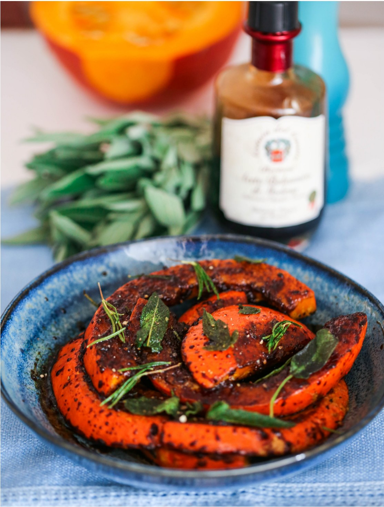

Осень, несомненно, сезон роскошной тыквы. Как же эффектно смотрятся эти красавицы разных форм, размеров и цветов на фермерских рынках, глаз не отвести. Но я нередко сталкиваюсь с тем, что тыкву, несмотря на все ее общеизвестные полезные качества, далеко не все любят и понимают. Хотя если пробуют правильно приготовленную, часто меняют свое мнение.
Сортов тыквы существует огромное множество, и не думаю, что нужно подробно описывать каждый. Несколько самых популярных назвать нужно, потому что вы наверняка найдете их в продаже в любом месте, где бы ни жили. В России, кстати, тыквы принято делить на три группы: мускатные, твердокорые и крупноплодные.
Баттернат (мускатная). Ее легко отличить внешне, она имеет вытянутую форму с округлой нижней частью. Ее характерные особенности — гладкая и тонкая корка, отсутствие семян в узкой части и небольшое количество в округлой. Мякоть этой тыквы ярко-оранжевая и сладкая, а английское название butternut прямо описывает вкус в готовом виде: маслянистый и ореховый. Универсальный сорт, который подойдет практически для любого блюда.
Хоккайдо. Небольшая по размеру тыква с ярко-оранжевой коркой, округлой или слегка вытянутой грушевидной формы. Родственница тыквы баттернат (она тоже относится к мускатным сортам), с такой же тонкой коркой и сладкой мякотью с ореховым привкусом в готовом виде. Из-за компактного размера идеально подходит для фарширования целиком.
Акорн (желудевая). Как явствует из названия, формой тыква напоминает желудь. У нее довольно жесткая корка (она относится к группе твердокорых тыкв), которая может быть разных цветов, от светлого, почти белого, до темно-зеленого. Мякоть у этой тыквы светло-желтая и плотная, а потому хорошо подходит для жарки; в готовом виде она чем-то напоминает батат или картошку.
Крупноплодная. Та самая тыква, которая ассоциируется с Хэллоуином или каретой для Золушки, круглая или приплюснутая, обычно ребристая. Главный ее недостаток (или достоинство?) — огромный размер. Хорошо, что эту тыкву часто продают в разрезанном виде. Мякоть у крупноплодных тыкв средней плотности, сладкая, и это также универсальный выбор для многих блюд, от супов до каш и десертов. Кстати, именно из этих тыкв получают семечки.
Есть и необычные, экзотические сорта, например тыква-спагетти, интересная тем, что ее волокнистая мякоть в готовом виде по текстуре действительно напоминает самый популярный вид пасты. Отличная здоровая альтернатива настоящим спагетти.
Тыква может храниться очень долго, поэтому считается одним из самых популярных «зимних» овощей. В целом виде и в сухом прохладном месте тыква спокойно продержится полгода, а то и дольше. Но после разрезания ее уже следует держать в холодильнике — примерно неделю, максимум дней десять.
Существует множество способов готовить тыкву: ее можно запекать, делать пюре, варить разнообразные супы, жарить, фаршировать целиком (это очень эффектно и вкусно!), использовать как начинку для хинкали и тартов, добавлять в каши и ризотто, делать из ее мякоти цукаты, и это далеко не полный список. Тыкву даже можно есть в сыром виде!
Особенность тыквы как кулинарного ингредиента в том, что ее мякоть хоть и сладкая, но в целом нейтральная по вкусу, поэтому она прекрасно «дружит» с разными специями. Тыквенное пюре для начинки тарта, например, украсят ароматные корица, гвоздика и бадьян, а если вы готовите несладкое блюдо, это может быть перец чили, черный перец, мускатный орех, сумах, любые «твердые» ароматные травы (тимьян, розмарин, орегано) и многое другое.
Йотам Оттоленги готовит тыкву баттернат с апельсиновым маслом и жженым медом. Апельсиновое масло делается просто: нужно снять с апельсина очень тонкий слой оранжевой цедры, измельчить в блендере с 50 мл оливкового масла, дать настояться полчаса и процедить. Тыкву (чуть меньше килограмма) нарезать ломтиками, сложить в миску, добавить пару ложек оливкового масла, щепотку тертого мускатного ореха, посолить, поперчить, перемешать и запечь до мягкости, перевернув в середине процесса. В кастрюльке прогреть мед до темного оттенка, добавить вырезанные из апельсина сегменты мякоти и ложечку яблочного уксуса, перемешать. Разложить на блюде печеную тыкву, ломтики сыра пекорино и апельсин в медовой глазури, посыпать листочками свежего орегано и жареными тыквенными семечками, полить оставшимся медом и сбрызнуть ароматным апельсиновым маслом.
Джейми Оливер предлагает простое в приготовлении блюдо из курицы с тыквой: приправить филе куриной грудки рубленым майораном или орегано, посолить, поперчить и выложить в смазанную маслом форму. Нарезать мякоть тыквы тонкими ломтиками и красиво выложить вокруг филе. Посолить, посыпать перцем чили, полить несколькими ложками сливок, сбрызнуть все оливковым маслом и запекать при 200 °С минут 20–25.
Найджел Слейтер делится рецептом пряного тыквенного супа с беконом: обжарить на сливочном масле рубленую луковицу и пару зубчиков чеснока, крупно нарезать примерно 700 граммов мякоти тыквы и обжарить вместе с луком до золотистого цвета. Отдельно слегка обжарить на сухой сковородке пару щепоток семян кориандра и кумина и растереть в ступке, добавить к тыкве вместе со щепоткой сухого перца чили. Влить литр куриного или овощного бульона и варить до мягкости тыквы. Готовый суп измельчить блендером, добавить 100 мл сливок и прогреть. При подаче посыпать обжаренным до хруста и разломанным на кусочки подкопченным беконом.
Мускатные тыквы (баттернат и хоккайдо) запекайте и варите вместе с кожурой. Она мягкая и полностью съедобная.
Если все-таки хотите очистить мускатную тыкву, сделайте из очисток чипсы: нарежьте срезанную овощечисткой кожуру полосками, выложите в миску, сбрызните оливковым маслом, посолите, поперчите и добавьте любую сухую ароматную траву (тимьян, розмарин) или перец чили хлопьями. Разложите на выстеленном пергаментом противне и подсушите в духовке при 160 °С до хруста.
Небольшие тыквы хоккайдо используйте как эффектную посуду для подачи. Срежьте крышечки, извлеките волокнистую мякоть с семечками, посолите, поперчите, положите внутрь ароматные травы. Накройте срезанными крышками и запекайте при 180 °С до мягкости. В запеченной тыкве можно подать плов с сухофруктами, мясное или овощное рагу, карри и, конечно, тыквенный суп.
У крупной тыквы извлеките из волокнистой мякоти семечки, промойте, хорошенько промокните полотенцем, а затем дайте полностью высохнуть, разложив их на выстеленном пергаментом противне в один слой, от 30 минут до 1 часа в очень слабо нагретой духовке, при 60–80 °С. Можно перед сушкой еще влажные семечки присыпать каменной солью.